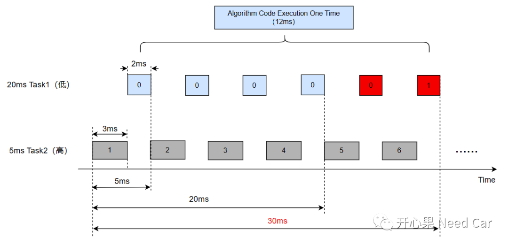
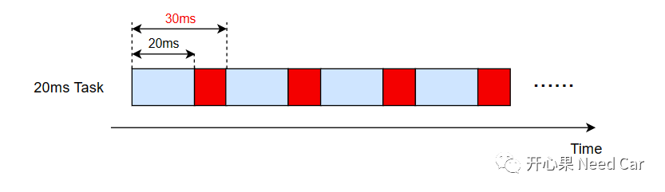
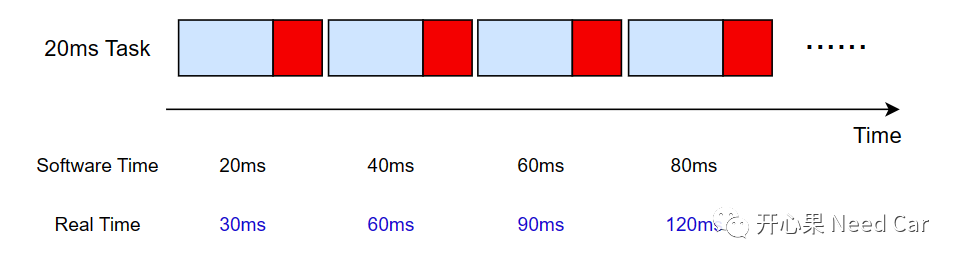
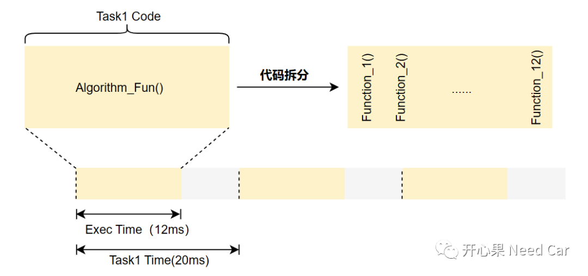
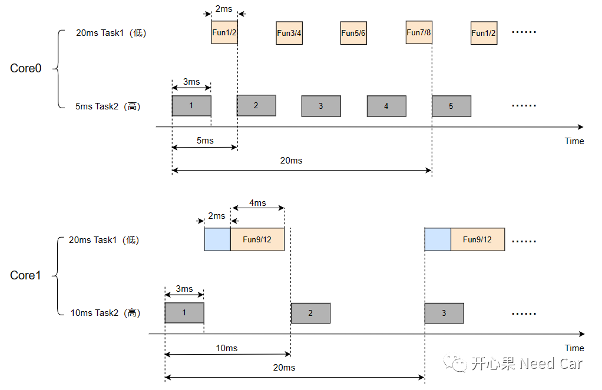

开心果 Need Car · 2023-04-26T10:27:00+08:00 · 微信原文
汽车嵌入式开发中，各家产品算法都属于核心秘密，如果说基础软件是"地基"，那么，算法就是各异的上层建筑。而不同的上层建筑也意味着用材和工时不同，对应到嵌入式开发，也就意味着算法复杂度不同，算法复杂度的不同，意味着算法代码执行时间不同。而Task对应代码执行时间的长短对产品功能的影响至关重要。本文，讨论一下算法执行时间过长所带来的影响，以及优化方式。
1、算法执行时间过长带来的影响
举例：某个核（eg：Core0）有两个Task，20ms周期的Task1（优先级低）和5ms的Task2（优先级高）。其中Task1中有复杂算法，对应的代码执行时间需要12ms，Task2对应代码的执行时间需要3ms。Task1和Task2的运行状况如下所示：

如上可以看出，Task1的调度周期为20ms，但是，由于Task2的抢占，Task1无法在20ms的时间内将算法完整的执行一遍，而是需要30ms的时间才能将算法执行一次。如此，就会造成Task1（20ms周期）周期不准，即：30ms才能完整执行一次算法，如下所示：


如上可以看出，在20ms的Task中设计一个软件计时器，代码每执行一遍，时间累加20ms，由于Task抖动，实际代码每30ms才执行一次。如此，导致软件计时与真实时间产生差距，使得计时不准。
2、算法优化


往期精彩回顾
Bootloader开发：为什么需要SBL（Secondary Bootloader）?
Autosar EcuM：APP由RUN到POST_RUN浅析